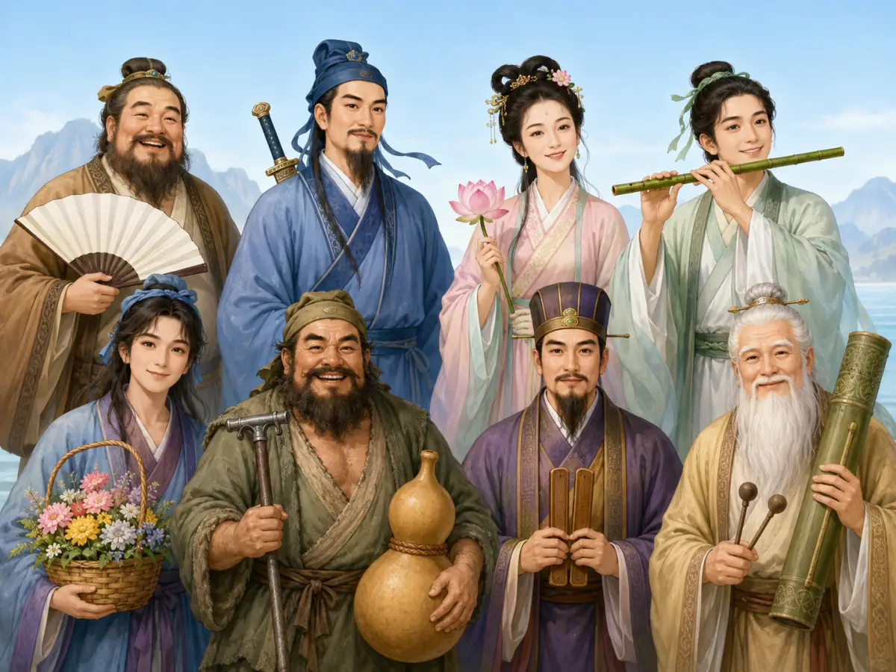

八仙是怎样过海的？
How Did the Eight Immortals Cross the Sea?
Page 1
道教从哪里来？
Where Did Daoism Begin?
佛教最早从印度传入中国，道教却是在中国本土慢慢形成的。它从中国古代的思想和生活中生长出来，经过很多年，才成为今天人们所说的道教。
很久以前，人们就在思考：世界一直在变化，我们怎样才能好好生活？遇到难事时，怎样才能平静下来？身体怎样才能更健康，生命怎样才能更长久？
“道”的意思是“道路”，也可以理解为天地万物运行的方式。道教先人仔细观察自然：水遇到石头，会绕过去继续流；树枝被风吹弯，风停后又挺起来。他们觉得，人不必总和自然较劲，也可以学着顺应自然的节奏生活。
While Buddhism first came to China from India, Daoism grew from ideas and traditions already in China. It took shape slowly over many years.
Long ago, people were asking big questions. How can we live well in a world that keeps changing? How can we stay calm when life becomes hard? How can we care for our bodies and live longer lives?
The word Dao means “the Way.” It can also mean the way the world works. Early Daoist thinkers watched nature closely. Water meets a rock and flows around it. A tree bends in the wind, then rises again. They believed people could live better by working with nature instead of always fighting it.
Page 2
从养生到神仙
From Caring for Life to Immortals

The Eight Immortals have different ages, faces, clothes, and magical objects.
一些道教修行者练习平稳地呼吸、舒展身体、静坐，也注意饮食和休息。他们把这些叫作“养生”，也就是好好照顾生命。他们希望身体强健，活得更久；还有一些人梦想着永远不老，成为“仙”。
在许多道教故事里，仙人原来也是普通人。他们经过长时间的学习和修炼，或者遇到一次奇妙的机会，才拥有法术和漫长的生命。
Bā Xiān · 中国道教故事中性格和法宝各不相同的八位仙人。就是最有名的仙人组合之一。传说中的他们各有各的模样和脾气。有人年老，有人年轻；有人拿宝剑，有人拿扇子，还有人带着花篮或葫芦。正因为每个人都不一样，他们最出名的那次旅行才特别有趣。
Some Daoists practiced steady breathing, gentle movement, quiet sitting, and other ways of caring for life. They hoped to stay strong and live longer. Some dreamed of never growing old at all. In stories, a person who gained an amazingly long life and magical powers might become a xian, or immortal.
Many Daoist tales say that immortals began as ordinary people. After years of learning and practice—or one marvelous meeting—their lives changed.
The Bā Xiān · 八仙 · A famous group of eight Daoist immortals, each with a different personality and special object. are one of the best-known groups of immortals in Chinese stories. Legends give each one a different look and personality. Some are old and some are young. One carries a sword, another a fan, and others carry a flower basket, a gourd, or other treasures. Because each one is different, their most famous journey is especially fun.
Page 3
没有船，怎么过海？
No Boat—Now What?
Tieguai Li rides the little boat his crutch became, while Lü Dongbin crosses on his sword.
一天，八仙来到东海边。眼前没有桥，也没有船，只有海浪哗啦哗啦地扑上岸。
一位仙人提议，今天大家不用云，也不坐船，各自想一个办法过海。其他人都同意了。
Tiěguǎi Lǐ · 八仙之一，常带铁拐和大葫芦。先把铁拐丢进海里。海水一碰，那根旧铁拐竟变成了一只小木船！他跳进船里，随着浪头向前冲去。Lǚ Dòngbīn · 八仙之一，常被画成背剑的文士。把宝剑放在海面上，双脚稳稳地站了上去。宝剑像一块窄窄的冲浪板，带着他追上了小船。
其他仙人也出发了。扇子、会动的小纸驴、花篮、荷花、笛子和一对能敲响的木板一起漂上水面，载着他们越过海浪。八个人遇到同一片海，却想出了八种办法。这就是“八仙过海，各显神通”。
One day, the Eight Immortals reached the shore of the East Sea. There was no bridge and no boat. Waves crashed onto the beach and rushed back again.
One immortal suggested a challenge. No clouds and no ordinary boat—each traveler would find a different way across. Everyone agreed.
Tiěguǎi Lǐ · 铁拐李 · One of the Eight Immortals, recognized by his iron crutch and large gourd. tossed his iron crutch into the water. Splash! The old crutch turned into a little wooden boat. He jumped in and sped over the waves. Lǚ Dòngbīn · 吕洞宾 · One of the Eight Immortals, often shown as a scholar carrying a sword. laid his sword on the sea and stepped onto it. The sword carried him forward like a very narrow surfboard, and soon he caught up with the boat.
The others set off too. A fan, a little paper donkey that sprang to life, a flower basket, a lotus, a flute, and a pair of clicking wooden boards bobbed across the water with their riders. Eight immortals faced the same sea and found eight different ways across. That is the story behind the saying, “The Eight Immortals cross the sea, each showing a special power.”
Page 4
龙仙大战
Dragons Against Immortals
有一种流传很广的讲法说，八仙一路上玩得太开心了。法宝在浪头上一起一伏，海面上又是闪光，又是巨响，连海底的龙宫都被惊动了。
龙王派人上来查看。龙王太子看中了蓝采和的玉板，竟把它抢走了，还把蓝采和带进龙宫。其他七位仙人立刻掉头去救朋友。双方越吵越凶，一场“龙仙大战”就在海上打了起来。狂风卷着巨浪，法术的光芒在水面上闪来闪去。
就在争斗越闹越大的时候，佛教故事中以慈悲闻名的Guānyīn · 中国佛教中以慈悲、救助众生闻名的菩萨。来了。她让双方停手，也请龙王放出蓝采和。八位朋友终于重新聚在一起，海面和龙宫都慢慢安静下来。
In one popular version of the tale, the immortals were having so much fun that they made quite a commotion. Their treasures flashed, the waves boomed, and the noise reached the Dragon Palace on the sea floor.
The Dragon King sent guards to the surface. A dragon prince spotted Lan Caihe’s shiny jade boards, grabbed them, and carried Lan Caihe down to the palace. The other seven immortals raced after their friend. Angry words soon became a battle of dragons and immortals. Wind roared, huge waves rose, and flashes of magic danced across the water.
Before the fight grew even bigger, Guānyīn · 观音 · A compassionate bodhisattva who hears and helps beings in distress. arrived. She is a Buddhist figure known for kindness and mercy. She told everyone to stop and asked the Dragon King to free Lan Caihe. At last, the eight friends were together again, and the sea grew quiet.
Page 5
留在中国文化里的道教
Daoism in Chinese Culture
道教不仅有道观和养生的学问，也给中国文化留下了许多会飞的法宝、藏在山中的仙人和代代相传的精彩故事。它关于照顾生命、顺应自然的想法，也一直留在中国人的生活和语言里。
八仙常常出现在年画、cíqì · 用瓷土等材料高温烧成的坚硬陶瓷制品。和舞台上。“八仙过海，各显神通”也成了一句常用的话，用来形容大家各自拿出本领，解决同一个难题。故事虽然古老，八位性格各不相同的仙人，今天仍然活跃在中国的艺术、故事和日常语言中。
Daoism has temples and teachings about caring for life, but it has also filled Chinese culture with flying treasures, immortals hidden in the mountains, and wonderful stories passed down through generations. Its ideas about living with nature have become part of Chinese life and language too.
The Eight Immortals still appear in New Year pictures, on cíqì · 瓷器 · A hard, high-fired ceramic material made from carefully prepared clay., and onstage. Their adventure also gave Chinese speakers a familiar saying about different people using different skills to solve the same problem. The story is old, but the Eight Immortals still turn up in Chinese art, stories, and everyday speech.